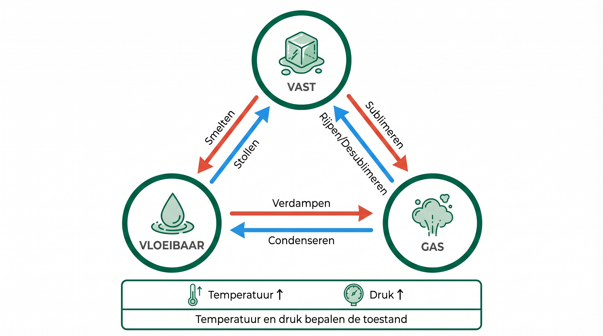
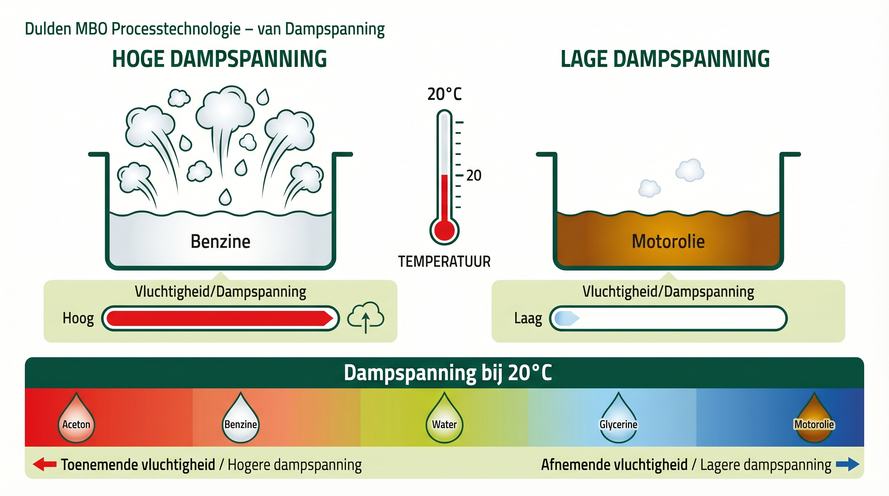
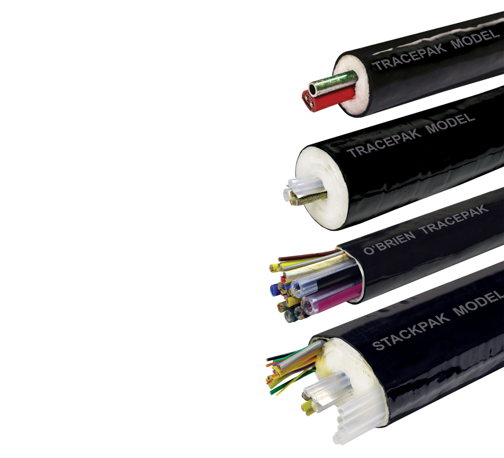
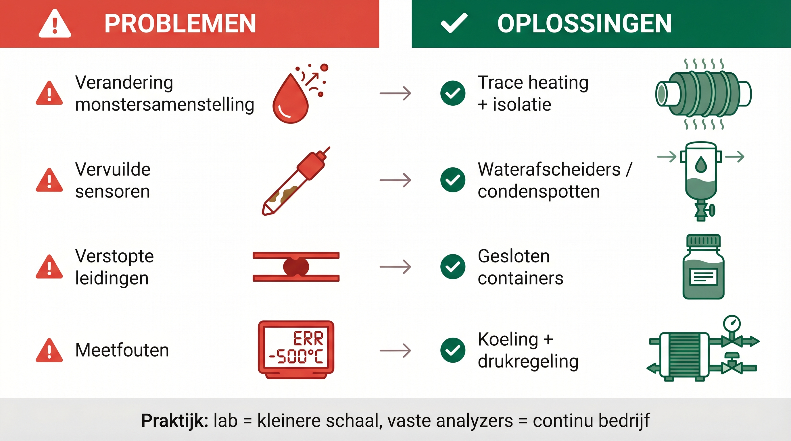
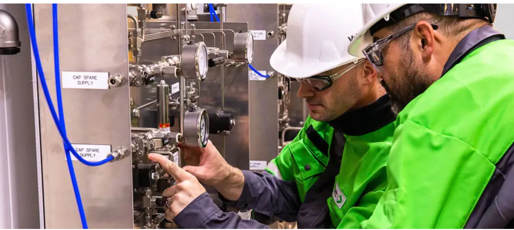

ANA – Module 2
3.1 Introductie
In analyzersystemen spelen natuurkundige principes een grote rol bij het correct meten en analyseren van stoffen. Factoren zoals temperatuur, druk en faseovergangen kunnen direct invloed hebben op de nauwkeurigheid en betrouwbaarheid van een meting. Zo kan een gas condenseren in een leiding, waardoor een verkeerde concentratie wordt gemeten, of kan een vloeistof verdampen tijdens de monstername, waardoor een analyser niet het juiste resultaat geeft.
In dit hoofdstuk worden de basisprincipes van aggregatietoestanden en verdamping besproken en hoe deze processen invloed hebben op analysetechnieken. Dit helpt bij het begrijpen waarom meetomstandigheden goed gecontroleerd moeten worden en hoe faseveranderingen een rol spelen in analytische systemen.
3.2 Leerdoelen
Na dit hoofdstuk kunnen studenten:
- De invloed van aggregatietoestanden, verdamping en oplossen op analytische processen begrijpen.
- Uitleggen hoe stoffen van de ene fase naar de andere overgaan en wat dit betekent voor analysetechnieken.
- Begrijpen hoe dampvorming en condensatie de nauwkeurigheid van metingen beïnvloeden.
3.3 Aggregatietoestanden en faseovergangen in analytische systemen
Wat zijn aggregatietoestanden?
Stoffen kunnen in drie verschillende toestanden voorkomen, we noemen dit aggregatietoestanden:

De drie aggregatietoestanden met deeltjesmodel — vast, vloeibaar en gas
🧊 Vaste stoffen
- Hoe ziet het eruit? Hard en houdt zijn vorm vast (zoals ijs of metaal).
- Wat doen de deeltjes? Ze zitten dicht tegen elkaar en kunnen alleen trillen.
- Kenmerken: vaste vorm en volume.
- In de analyzer: vaste monsters moeten soms vermalen of opgelost worden vóór de meting.
💧 Vloeistoffen
- Hoe ziet het eruit? Stroomt en neemt de vorm aan van zijn verpakking (zoals water of olie).
- Wat doen de deeltjes? Bewegen langs elkaar, maar blijven bij elkaar.
- Kenmerken: neemt de vorm aan van het vat, maar houdt eigen volume.
- In de analyzer: vloeistoffen worden vaak door de analyzer gepompt.
💨 Gassen
- Hoe ziet het eruit? Meestal onzichtbaar; vult de hele ruimte (zoals lucht).
- Wat doen de deeltjes? Bewegen vrij en snel in alle richtingen.
- Kenmerken: vult de hele beschikbare ruimte.
- In de analyzer: het volume wordt beïnvloed door temperatuur en druk — bij afkoeling krimpt het gas.
In Module 1 zagen we dat condensatie in leidingen kan leiden tot meetfouten of zelfs verstopping van systemen. Dit hoofdstuk laat zien wat daar fysisch gebeurt – en hoe je dat kunt voorkomen.
Een gasmonster wordt afgekoeld voordat het de analyzer bereikt. Wat gebeurt er typisch met het volume bij gelijkblijvende druk?
A) Het volume blijft gelijk omdat alleen druk telt
B) Het volume krimpt omdat de deeltjes langzamer bewegen
C) Het volume groeit omdat het gas indikt
D) Het gas verandert direct in een vaste stof
Faseovergangen: van de ene toestand naar de andere
Een stof kan van de ene aggregatietoestand naar de andere overgaan. Dit noemen we een faseovergang. Deze overgangen worden veroorzaakt door veranderingen in temperatuur of druk.
Belangrijke faseovergangen:
🔥 Smelten
Vast → vloeibaar. Bijvoorbeeld ijs dat smelt naar water.
❄️ Stollen
Vloeibaar → vast. Bijvoorbeeld water dat bevriest tot ijs.
💨 Sublimeren
Vast → gas. Bijvoorbeeld droogijs dat ‘verdampt’ zonder vloeibaar te worden.
❆ Rijpen
Gas → vast. Bijvoorbeeld ijskristallen op koude oppervlakken.
Faseovergangen in analyzers
Faseovergangen kunnen zowel nuttig als problematisch zijn in analyzersystemen:
✅ Nuttige toepassingen
- Smelten van vaste samples: sommige vaste stoffen moeten eerst worden gesmolten om geanalyseerd te kunnen worden.
- Temperatuursturing: door temperatuur gecontroleerd te regelen, breng of houd je stoffen in de juiste fase voor analyse.
⚠️ Veelvoorkomende uitdagingen
- Vast worden van vloeistoffen: te koude vloeistoffen kunnen stollen en leidingen blokkeren.
- Faseverandering tijdens transport: temperatuurveranderingen onderweg kunnen de toestand wijzigen.
- Condensatie: vocht dat in het sample condenseert kan de te meten componenten oplossen — bij SO₂-emissiemeting valt het resultaat dan te laag uit.
Temperatuur en druk
Twee factoren hebben grote invloed op de aggregatietoestand van een stof:
🌡️ Temperatuur
- Hogere temperatuur → deeltjes krijgen meer energie en bewegen vrij.
- Lagere temperatuur → deeltjes komen dichter bij elkaar.
⚙️ Druk
- Hogere druk → deeltjes worden dichter op elkaar geperst.
- Lagere druk → deeltjes krijgen meer ruimte om vrij te bewegen.
💬 Bespreek in duo’s: Wat zijn situaties waarin jij hebt gezien dat een stof veranderde van fase (bijv. gas → vloeistof)? Wat gebeurde er met het meetsysteem?
Praktijkvoorbeelden
📖 Praktijkvoorbeeld: Aardgas onder druk
Aardgas wordt onder hoge druk vervoerd in pijpleidingen. Voor het analyseren moet de druk worden verlaagd. Bij te snelle drukdaling kan het gas zo sterk afkoelen dat sommige componenten bevriezen en de analyzer verstoppen.
3.4 Dampen en verdampen in analytische systemen
Wat is verdamping?
Verdamping is een proces waarbij een vloeistof verandert in een gas. Dit gebeurt als moleculen genoeg energie krijgen om uit de vloeistof te "ontsnappen".
Het proces eenvoudig uitgelegd:
- Moleculen in een vloeistof bewegen altijd
- Sommige moleculen aan het oppervlak hebben meer energie dan andere
- Deze energieke moleculen kunnen ontsnappen uit de vloeistof en gas worden
- Hoe warmer de vloeistof, hoe meer moleculen kunnen ontsnappen
Verdampen versus koken:
- Verdampen: gebeurt alleen aan het oppervlak, bij elke temperatuur
- Koken: gebeurt bij een zuivere stof bij het kookpunt, en bij een mengsel is er sprake van een kook traject.
Wat is dampspanning?
Dampspanning vertelt ons hoe gemakkelijk een vloeistof verdampt.
Eenvoudig uitgelegd:
- Sommige vloeistoffen verdampen makkelijker dan andere
- Benzine verdampt bijvoorbeeld sneller dan water
- We zeggen: "Benzine heeft een hogere dampspanning dan water"

Dampspanning — hoe gemakkelijk een vloeistof verdampt, afhankelijk van temperatuur
Voor de praktijk:
- Vloeistoffen met hoge dampspanning: Verdampen snel bij kamertemperatuur. Voorbeelden: alcohol, benzine, aceton
- Vloeistoffen met lage dampspanning: Verdampen langzaam. Voorbeelden: motorolie, glycerine
Welke vloeistof heeft de hoogste dampspanning bij kamertemperatuur?
A) Motorolie
B) Glycerine
C) Aceton
D) Water
Hoe beïnvloeden dampen en verdamping metingen?
Problemen door verdamping:
Verandering van monster:
- Als in een vloeistofmonster sommige stoffen verdampen, verandert de samenstelling van het monster.
- Voorbeeld: Een benzinemonster dat open staat verliest eerst de lichtere componenten
Monsters die ongelijk verdampen:
- In een mengsel verdampen sommige stoffen sneller dan andere
- Gevolg: wat overblijft heeft niet meer dezelfde samenstelling als het origineel
- Bij LPG (vloeistoffase met daarboven een gasfase) door verdamping zullen de lichte componenten naar de gasfase gaan.
Problemen door condensatie:
- Als gas afkoelt in een leiding kan het condenseren tot vloeistof
- Door het condenseren verandert de samenstelling van het gas
- Voorbeeld: Waterdamp in uitlaatgas condenseert in koude meetleidingen

Verwarmde samplebundel (O'Brien) — voorkomt condensatie in sampleleidingen
Vervuilde sensoren:
- Condensatie op sensoren kan de werking beïnvloeden
- Voorbeeld: Een vochtlaagje op een gassensor kan de meting verstoren
Gebruik bij vluchtige producten (ethanol, benzine of oplosmiddelen) altijd gasdichte containers en koel indien nodig.
Een SO2-emissiemeting geeft systematisch te lage waarden. De sample-leiding is niet verwarmd. Wat is de meest waarschijnlijke oorzaak?
A) De analyzer is verkeerd gekalibreerd
B) Waterdamp condenseert in de leiding en lost SO2 op, waardoor minder SO2 de analyzer bereikt
C) De flow is te hoog en de analyzer kan het niet bijbenen
D) De druk is te laag waardoor SO2 verdampt

Overzicht van veelvoorkomende problemen door verdamping/condensatie en bijbehorende oplossingen
Oplossingen in de praktijk
In het lab:
- Gesloten monstercontainers gebruiken om verdamping te voorkomen
- Koeling van monsters om verdamping te vertragen
- Voorkom dat samples lang openstaan zodat er weinig tijd is voor verdamping
In vaste analyzers:
- Verwarmde leidingen om condensatie te voorkomen
- Waterafscheiders om condens op te vangen
- Constante temperatuur houden in het hele meetsysteem

Waterafscheider — vangt condens op voordat het sample de analyzer bereikt

Sample conditioning systeem (Siemens) — bereidt het monster voor op analyse
Toepassingen waarin dampvorming juist wordt gebruikt
Verdamping is niet altijd een probleem - soms wordt het juist gebruikt als analysetechniek:
- Headspace-analyse: We gebruiken de dampen boven een vloeistof voor analyse. Bijvoorbeeld: ruiken aan wijn om kwaliteit te beoordelen is een soort headspace-analyse
- Gaschromatografie: Een vloeistofmonster wordt verdampt in de injectieklep, zodat het in gasfase door een kolom kan stromen. Dit helpt om ze van elkaar te scheiden en te analyseren
- Destillatie: Scheiding van vloeistoffen op basis van verschillen in kookpunt. Wordt gebruikt bij analyse én bij productieprocessen
📖 Praktijkvoorbeeld: Verdamping in sampleleiding
In een sampleleiding verdampt een vluchtige stof als gevolg van een te lage druk. Waardoor een twee fase systeem ontstaat. Hierdoor kan het meetresultaat afwijken. Door drukverhoging zal dit niet optreden.